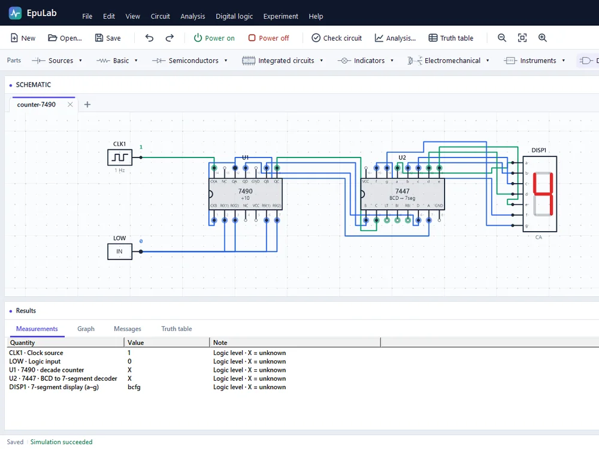

01
Windows 10/11 v0.0.3.3 beta 9.0 MB New
EpuLab
An electronics and digital-logic lab for engineering students. Draw a circuit, write down your prediction, then simulate it on a bundled ngspice engine and read the result on meters, an oscilloscope or a truth table. Works fully offline, in English, Arabic and Kurdish Sorani.
- DC, transient and AC analysis with an oscilloscope, gain/phase plots and CSV export
- Guided experiments, three levels of hints and a printable lab record
- Gate challenges with a Solve button that builds the answer from the allowed gates
C# · Windows Forms · .NET Framework 4.8 · ngspice
Download installer